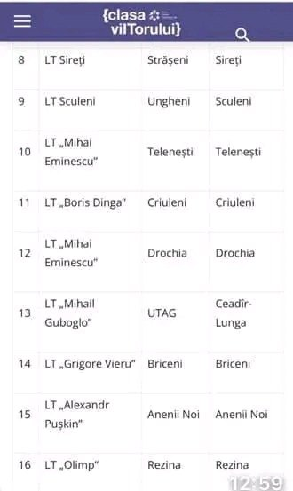
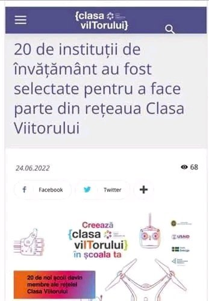

Clasa viitorului
Caduc Aliona | 20 iulie 2022, 14:25
Încă o victorie!!! Printre cele 20 de instituții selectate pentru a face parte din rețeaua Clasa Viitorului suntem bucuroși sa anunțam ca și Liceul Teoretic ,, Grigore Vieru” este selectat. Succes comunității școlare in implementare!
 